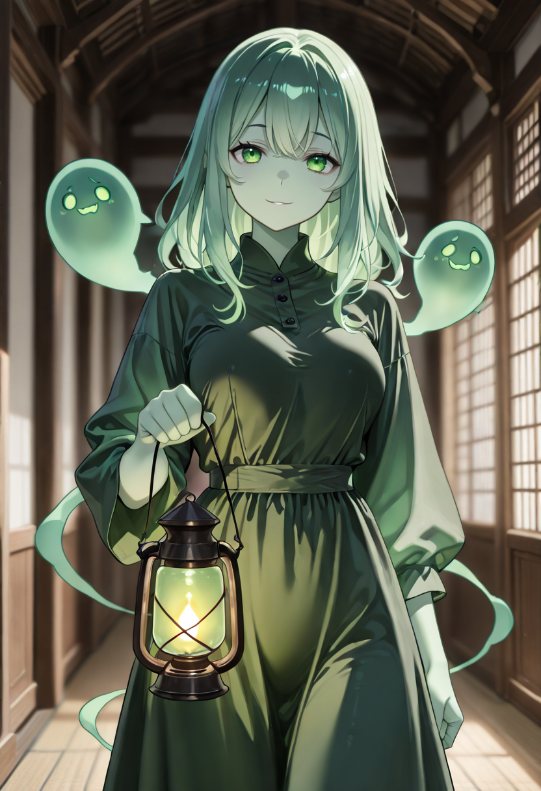
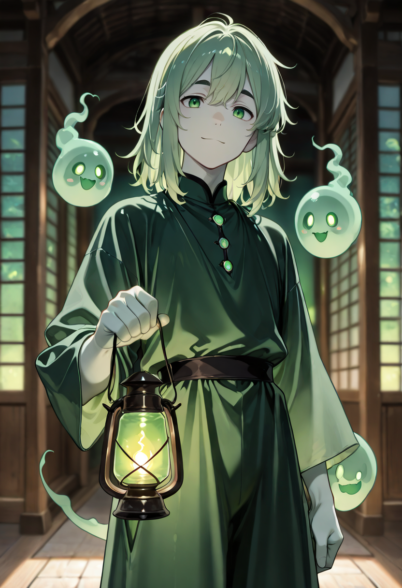
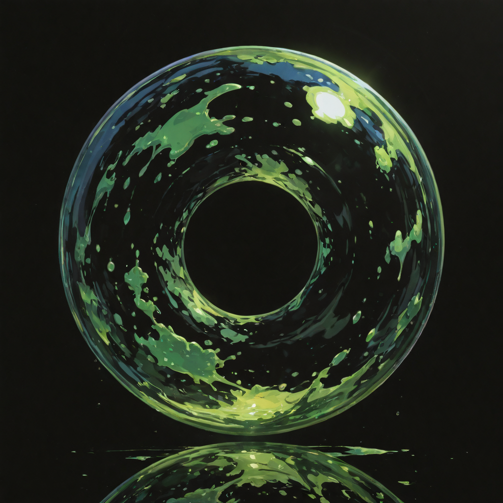
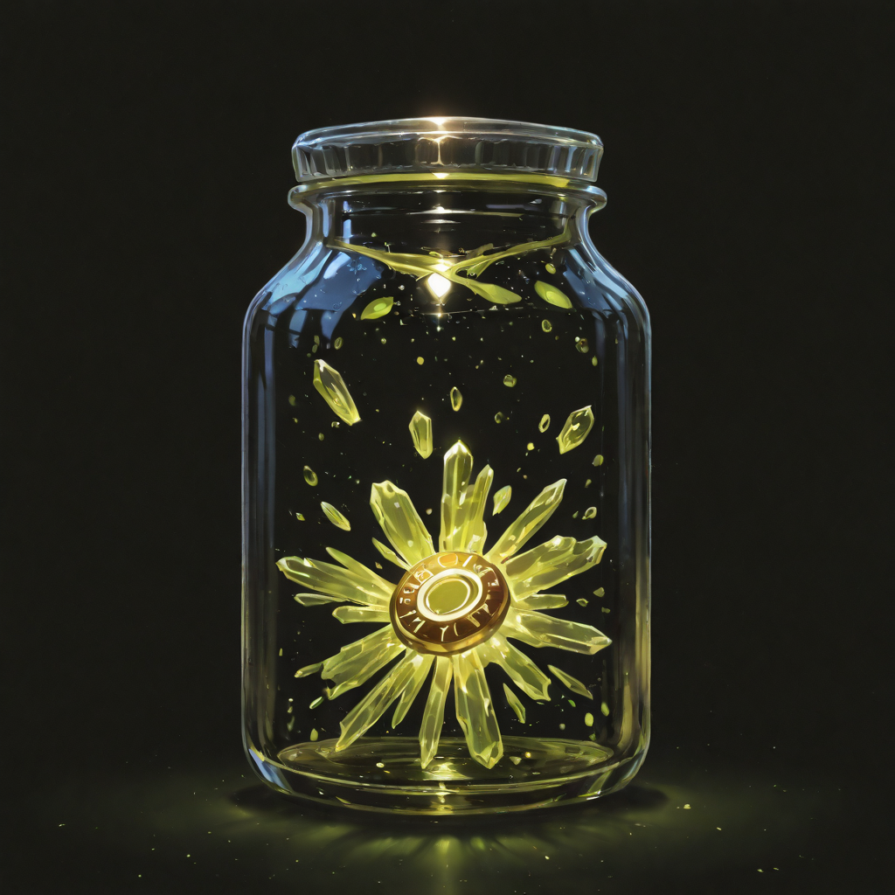

What Was Left Behind
The Inherited carry fragments of botanical knowledge they did not consciously learn in this life. The recipes come first , mid-battle, they find themselves reaching for an herb that doesn't grow in this region, pressing it between palms that should not know the pressure required, waiting for an effect they have no logical reason to expect.
It works. The knowledge is real. It was simply inherited from the person they used to be: likely an herbalist, a field surgeon, a midwife, an apothecary. Death blurred the memory but not the muscle reflex. The hands remember before the mind does.
They are the most tactile of the Linfa branch , the only ones who rely on touch rather than projection. Where the Spirit Guide reaches through the ether, the Inherited reaches through a pouch at their hip and knows what to do with what they find. Their body is still mostly sap-shadow hybrid, but their hands have taken on a warmer quality, as if the skin knows it was made for work.
Tactical Data

Botanical Legacy
Base
Transmission
ActiveGallery